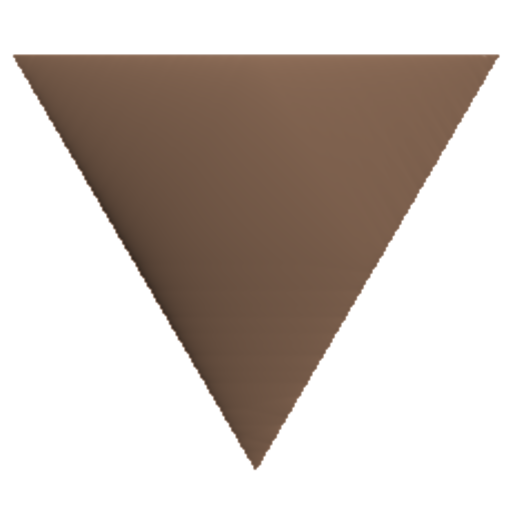
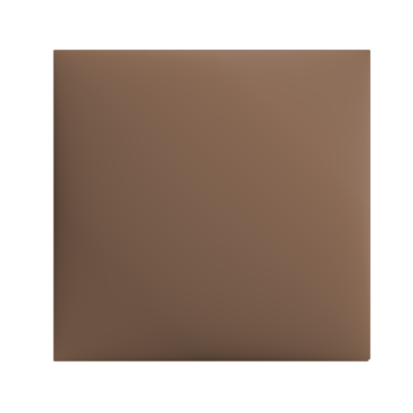
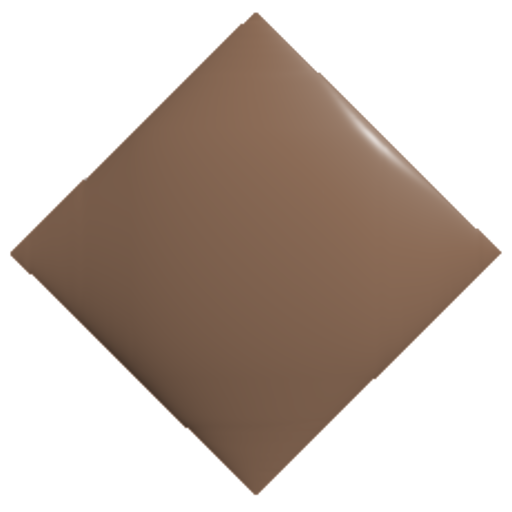
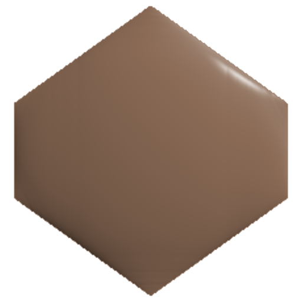
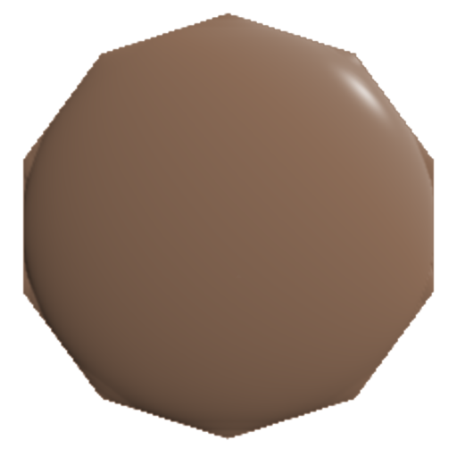

Интеллект
Базовая характеристика интеллект отражает общий ум и способность персонажа к анализу, нахождению закономерностей. Так же, интеллект отвечает за магическую силу персонажа его инициативу. Высокий интеллект позволяет раньше всех реагировать на изменение ситуации, способность её проанализировать и сделать быстрые, но точные выводы. Значение интеллекта может влиять на возможности персонажа к общению и социальному взаимодействию, но не обязательно с ними связан. Это означает, что персонаж игрока с интеллектом  может испытывать сложности при использовании речи, но так же это может означать что у него нет никаких проблем с общением и социальными нормами, просто он не способен быстро выполнять простейшие аналитические задачи вроде сложения и вычитания, а построение сложных причинно-следственных связей для него невозможно.
может испытывать сложности при использовании речи, но так же это может означать что у него нет никаких проблем с общением и социальными нормами, просто он не способен быстро выполнять простейшие аналитические задачи вроде сложения и вычитания, а построение сложных причинно-следственных связей для него невозможно.
Ранг существа
Однако ранг существа прямо пропорционален общим умственным способностям, а кость ранга выражает отличие внутри его "ранга".
 Ранг 1 |
Существо не способно к речи и сознанию, им движут только инстинкты. |
 Ранг 2 |
Существо обладает сознанием. Если его организм позволяет, оно может обучиться очень простой речи, но предел его умственных способностей - ребёнок 3-ёх лет. |
 Ранг 3 |
Существо обладает разумом, рассудком, сознанием. Его разум принаждлежит серому, что идентично обычным людям. |
 Ранг 4 |
Существо обладает таким интеллектом, что его можно считать гением. |
 Ранг 5 |
Существо обладает разумом божества. |
Отличия по рангам позволяют не только добиться справедливого состязания, но и дают возможность более слабому существу, например,
мыши, быть действительно умнее в выборе закуски (Интеллект +
Инстинкты), а
муравью- более искуссным в построении муравейника (Интеллект +
серому(При Интеллектеи Инстинктах/Инженерии
).
Инициатива
Зависит от интеллекта и скорости персонажа. Скорость отражает способности к реакции, а интеллект возможности просчитывания ситуации. Рассчитывается по формуле:
Скорость + (РангИнтеллекта+1)*
Ранг интеллекта определяет количество костей  для определения результата броска.
для определения результата броска.
Инициатива определяется единожды при создании персонажа.
Если вам не нравится результат инициативы вы можете перебросить кости до трёх раз выбрав более подходящее для вас значение.
Не обязательно выбирать максимальное значение броска - в большей степени инициатива определяется рангом интеллекта. Распределение инициативы между одинаковыми рангами минимально, а граничные значения между рангами не позволяют получить преимущество при меньшем интеллекте.
Магия
Кость интеллекта даёт одну дополнительную кость Силы магии, равную кости интеллекта.
К примеру, персонаж с
интеллектомволшебным посохомогненный шарбудет иметьпуллкостей: [Интеллект